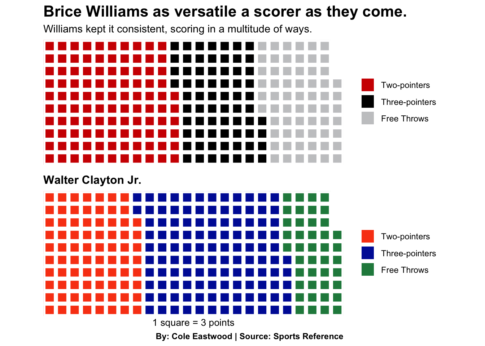
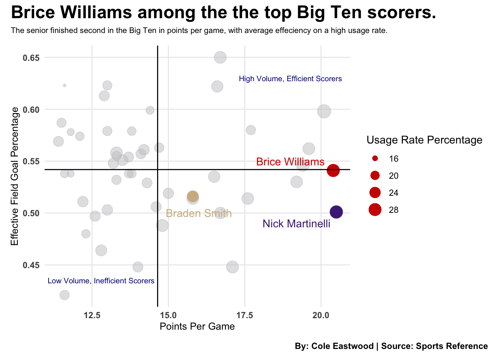
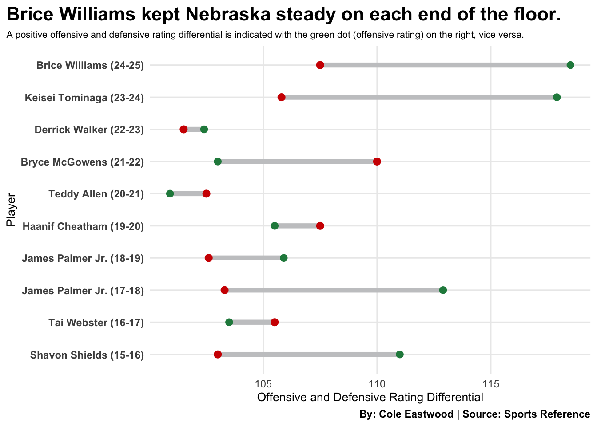

Despite coming up short of a second consecutive NCAA Tournament bid, Nebraska’s Brice Williams was phenomenal for the Cornhuskers, leading them to claim the inaugural College Basketball Crown Championship.
The Huskers had a roller-coaster of a season, with numerous long winning and losing streaks. But one constant remained: Brice Williams.
Williams shattered multiple records, etching his name in Nebraska basketball history with the most points in a single game — 43 against Ohio State on March 4, 2025 — and the most points in a season.
Code
library(tidyverse)library(gt)library(wehoop)library(ggplot2)PointsTable <-read.csv("data/PointsLeader.csv")PointsTable |>gt() |>cols_label(X ="Rank",Points.Per.Game ="Points Per Game",Total.Points ="Total Points",Name ="Player",Year ="Season" ) |>tab_header(title ="Brice Williams solidifies himself as a Husker great.",subtitle ="The guard finished the 2024-25 campaign with the most points in a season in Nebraska history, while averaging the sixth most points per game." ) |>tab_style(style =cell_text(color ="black", weight ="bold", align ="left"),locations =cells_title("title") ) |>tab_style(style =cell_text(color ="black", align ="left"),locations =cells_title("subtitle") ) |>tab_source_note(source_note =md("**By:** Cole Eastwood | **Source:** [Sports Reference](https://www.sports-reference.com/cbb/schools/nebraska/men/leaders-and-records)") ) |>tab_style(locations =cells_column_labels(columns =everything()),style =list(cell_borders(sides ="bottom", weight =px(3)),cell_text(weight ="bold", size=13) ) ) |>opt_row_striping() |>opt_table_lines("none") |>tab_style(style =list(cell_fill(color ="#d00000"),cell_text(color ="#fefdfa") ),locations =cells_body(rows = Name =="Brice Williams") )
Brice Williams solidifies himself as a Husker great.
The guard finished the 2024-25 campaign with the most points in a season in Nebraska history, while averaging the sixth most points per game.
As Williams propelled himself into the Cornhusker record books, it raised the question among Husker fans: Just how remarkable was the season they were witnessing from the North Carolina native?
To truly understand how incredible Williams’ scoring season was, you first have to break down exactly how he scored. The senior was elite at every level — scoring inside, on midrange jumpers, beyond the arc and at the free-throw line.
Here is Williams’ scoring breakdown compared to Florida guard and 2025 NCAA Final Four Most Outstanding Player Walter Clayton Jr., who, conveniently, finished with the same number of points as Williams.
Code
library(patchwork)library(waffle)BriceWilliamsWaffleChart <-c("Two-pointers"=320, "Three-pointers"=204, "Free Throws"=189)WalterClaytonJrWaffleChart <-c("Two-pointers"=236, "Three-pointers"=351, "Free Throws"=126)iron(waffle( BriceWilliamsWaffleChart/3,rows =10,colors =c("#d00000", "black", "#c7c8ca") ) +labs(title ="Brice Williams as versatile a scorer as they come.",subtitle ="Williams kept it consistent, scoring in a multitude of ways." ) +theme(plot.title =element_text(size =16, face ="bold"),axis.title =element_text(size =10),plot.caption =element_text(face ="bold"),axis.title.y =element_blank() ),waffle( WalterClaytonJrWaffleChart/3,rows =10,colors =c("#fa4616", "#0021a5", "#22884c") ) +labs(title ="Walter Clayton Jr.",x ="1 square = 3 points",caption ="By: Cole Eastwood | Source: Sports Reference" ) +theme(plot.title =element_text(size =12, face ="bold"),axis.title =element_text(size =10),plot.caption =element_text(face ="bold"),axis.title.y =element_blank() ))

What made Williams’ scoring outburst even more impressive was his efficiency. The guard put up absurd numbers consistently, posting a 28.7% usage rate — meaning a large proportion of Nebraska’s possessions ran through him.
Despite the heavy workload, Williams was far more efficient than most of the Big Ten’s top 50 scorers, including Northwestern forward Nick Martinelli, who led the conference with 20.5 points per game, and Purdue guard Braden Smith, who was the Big Ten Player of the Year.
Code
BigTenData <-read_csv("data/BigTenData2025.csv")BigTenData50 <- BigTenData |>head(50)BriceWilliams <- BigTenData |>filter(Player =="Brice Williams")NickMartinelli <- BigTenData |>filter(Player =="Nick Martinelli")BradenSmith <- BigTenData |>filter(Player =="Braden Smith")ggplot() +geom_point(data=BigTenData50, aes(x=PTS, y=eFG, size=USG), color="#c7c8ca", alpha=.5) +geom_text(aes(x=19.2, y=0.49, label ="Nick Martinelli"), color="#4E2A84") +geom_point(data=NickMartinelli, aes(x=PTS, y=eFG, size=USG), color="#4E2A84") +geom_text(aes(x=16, y=0.50, label ="Braden Smith"), color="#cfb991") +geom_point(data=BradenSmith, aes(x=PTS, y=eFG, size=USG), color="#cfb991") +geom_text(aes(x=19, y=0.55, label ="Brice Williams"), color="#d00000") +geom_point(data=BriceWilliams, aes(x=PTS, y=eFG, size=USG), color="#d00000") +geom_text(aes(x =19, y =0.63, label ="High Volume, Efficient Scorers"), color ="darkblue", size =2.7) +geom_text(aes(x =12.8, y =0.435, label ="Low Volume, Inefficient Scorers"), color ="darkblue", size =2.7) +geom_vline(xintercept =14.648, color ="black") +geom_hline(yintercept =0.54188, color ="black") +labs(x="Points Per Game",y="Effective Field Goal Percentage" ) +scale_size_continuous(name ="Usage Rate Percentage") +plot_annotation(title ="Brice Williams among the the top Big Ten scorers.",subtitle ="The senior finished second in the Big Ten in points per game, with average effeciency on a high usage rate.",caption ="By: Cole Eastwood | Source: Sports Reference" ) &theme_minimal() +theme(plot.title =element_text(size =18, face ="bold"),axis.title =element_text(size =10), plot.subtitle =element_text(size=8), plot.caption =element_text(face ="bold"),axis.text.x =element_text(face ="bold"),axis.text.y =element_text(face ="bold"),panel.grid.minor =element_blank(),plot.title.position ="plot" )

There should be no doubt by now that Williams was an elite scorer — but how did he hold up on the defensive end in contrast to his offensive explosion?
While his defensive rating was not the best among Nebraska’s past 10 leading scorers (by points per game), Williams was serviceable, posting a defensive rating of 107.5 per 100 possessions — meaning Nebraska gave up an estimated 107.5 points per 100 possessions with him on the floor. His offensive rating, outpaced that figure at 118.5, showing that Nebraska outscored its opponents by an average of 11 points per 100 possessions when Williams was in the game. That differential trailed only former Nebraska guard Keisei Tominaga among the team’s past 10 leading scorers.
Code
library(tidyverse)library(ggalt)library(ggtext)RatingChart <-read_csv("data/ORtgDRtg.csv")ggplot() +geom_dumbbell(data=RatingChart, aes(y=reorder(Player, Season), x=ORtg, xend=DRtg),size =2,colour ="#c7c8ca",colour_x ="#22884c",colour_xend ="#d00000") +labs(title="Brice Williams kept Nebraska steady on each end of the floor.", subtitle ="A positive offensive and defensive rating differential is indicated with the green dot (offensive rating) on the right, vice versa.",y ="Player",x ="Offensive and Defensive Rating Differential",caption ="By: Cole Eastwood | Source: Sports Reference", ) +theme_minimal() +theme(plot.title =element_text(size =16, face ="bold"),axis.title =element_text(size =10), plot.subtitle =element_text(size=8), plot.caption =element_text(face ="bold"),axis.text.y =element_text(face ="bold"),panel.grid.minor =element_blank(),plot.title.position ="plot", )

In conclusion, despite spending just two years in Lincoln, Brice Williams’ 2024–25 season immediately puts him among the Husker greats — maybe even a candidate to have his jersey retired for helping bring Nebraska basketball back to relevance with back-to-back 20-win seasons for the first time since the 1990s. A frustrating season for the team should not overshadow how special Williams’ campaign was, as he put the team on his back night in and night out while remaining as efficient and reliable as anyone in the conference.
Williams’ game lacks any true weaknesses, and his tenure at Nebraska appears to be just the beginning of what’s anticipated to be a lengthy pro career for the All-Big Ten First Teamer.